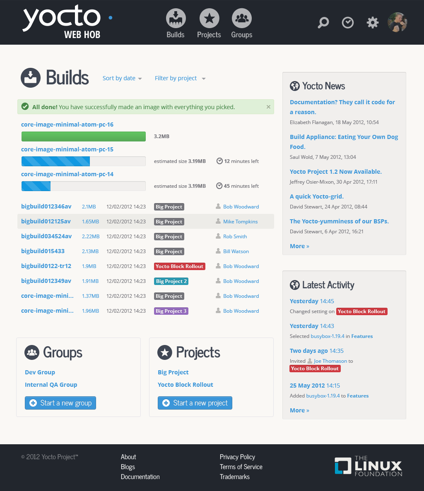
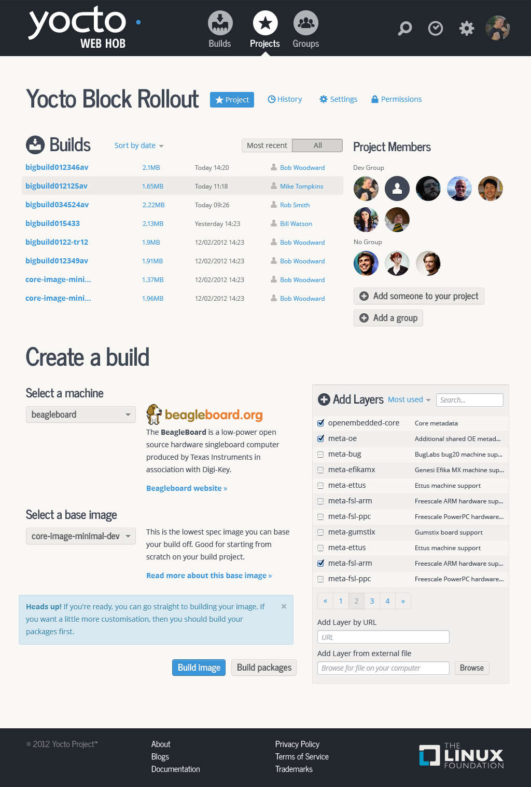
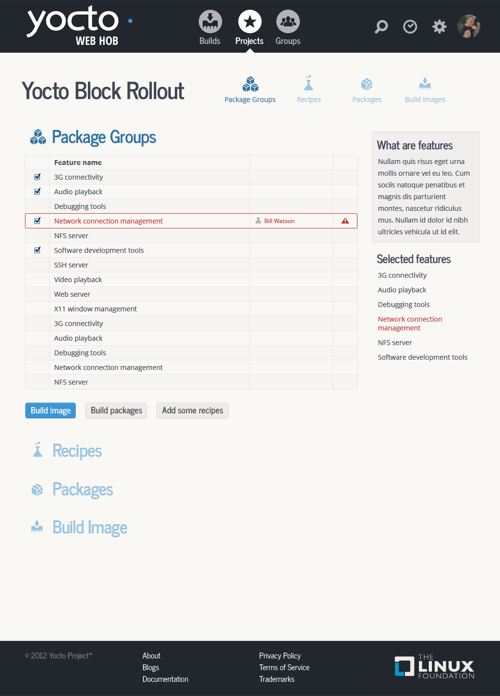
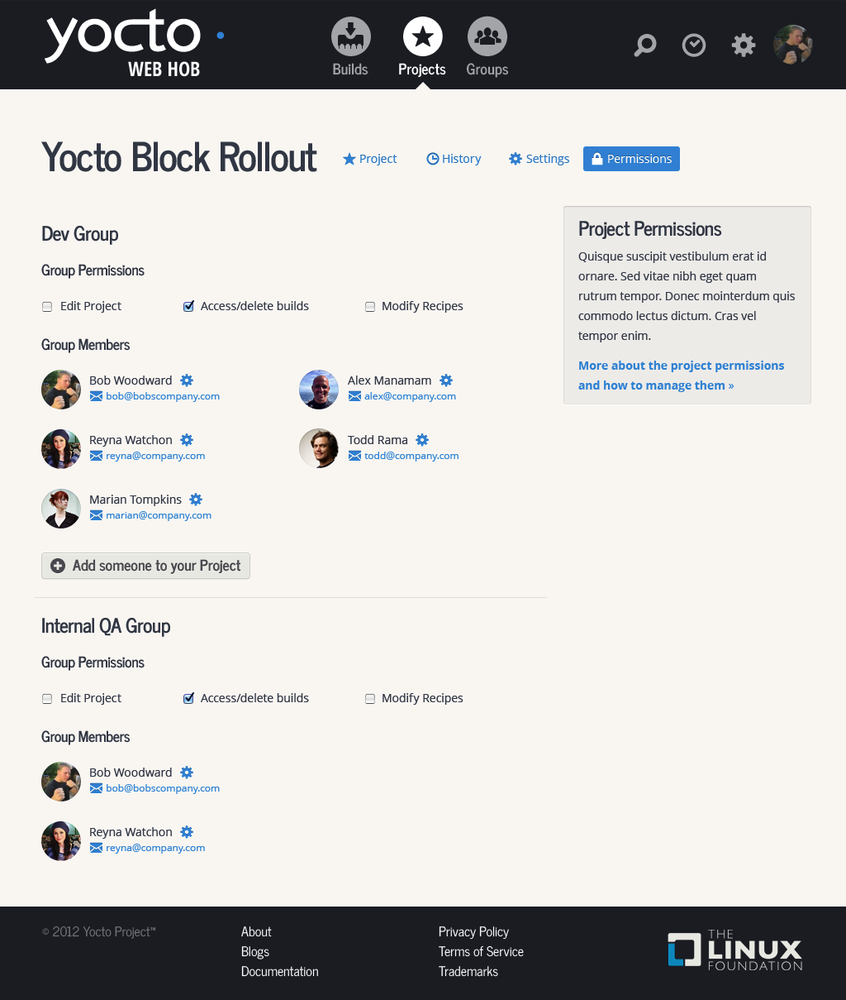
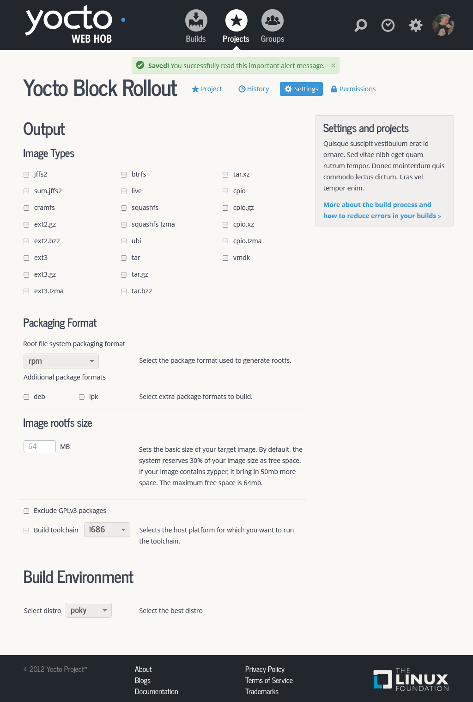
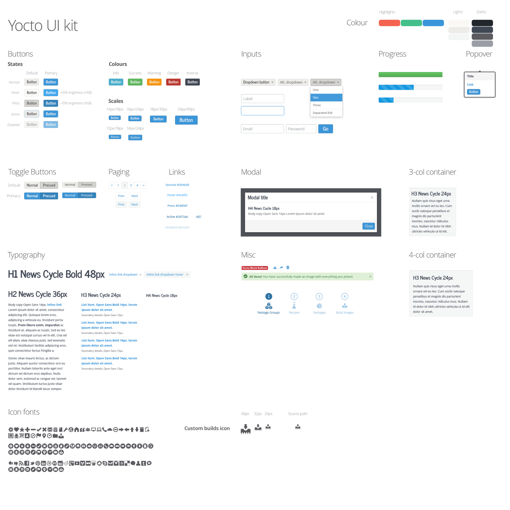

Yocto
The Yocto Project is a global open source effort maintained by the Linux Foundation to create an easy way to create custom Linux builds, especially for embedded systems. Up until early 2012 this was all command line.
Taking the cue from the first version of a Linux desktop version we conducted interviews and user research and worked with teams from the US, to the UK, to Romania to China to come up with a web based networked version that would allow developers to work collaboratively to create incredibly small and efficient custom versions of Linux.
This resulted in an intuitive, easy to use interface to an incredibly complicated process, taking the user trying to build Linux images through a logical process to build images in teams.
With help from Konstantinos Papagiannopoulos.





